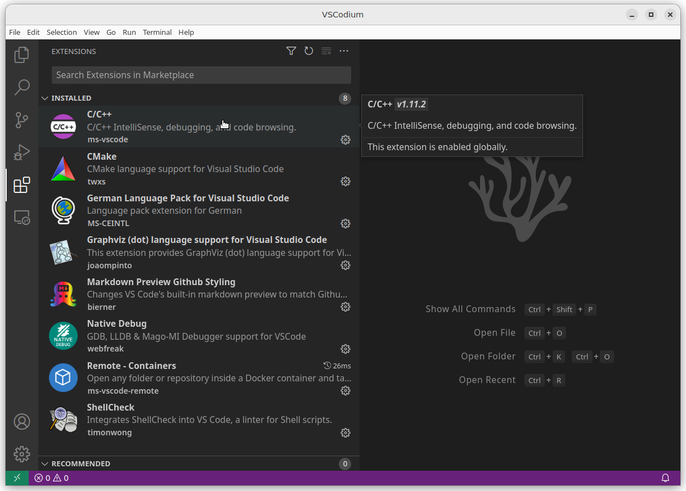
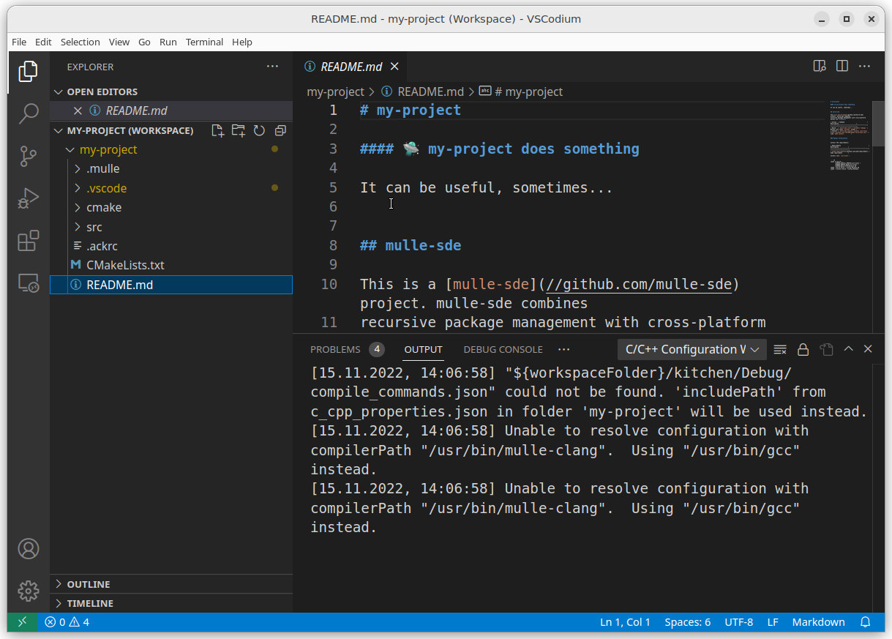
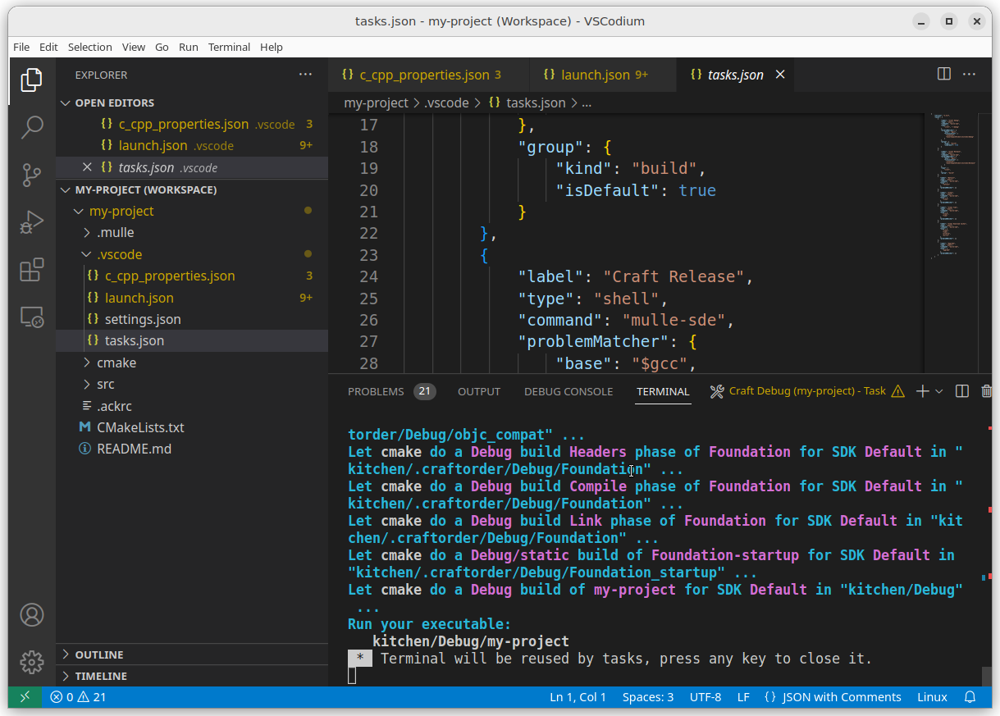
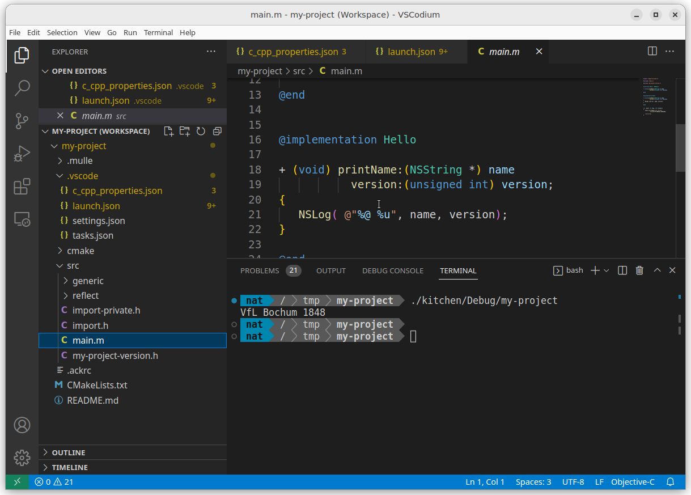
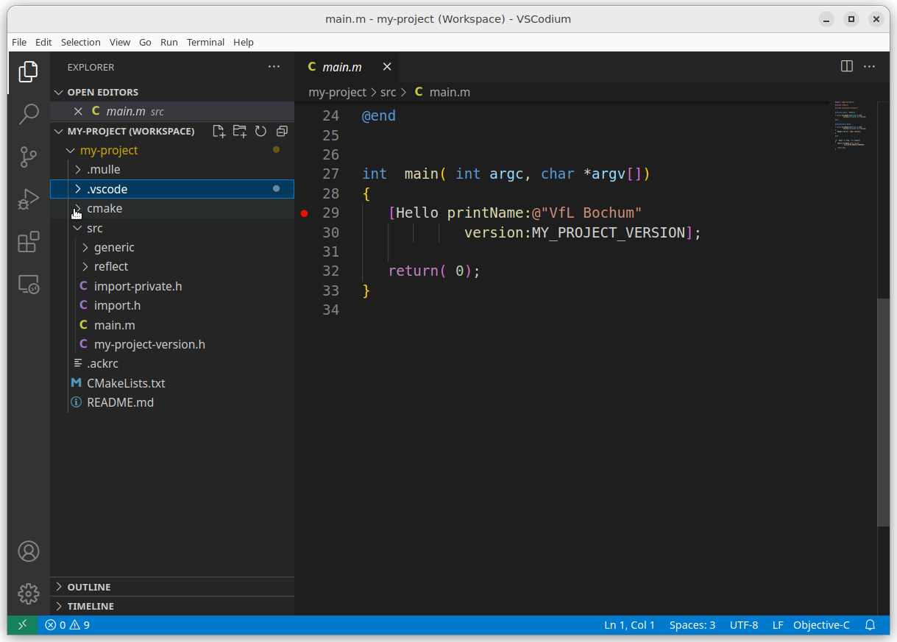
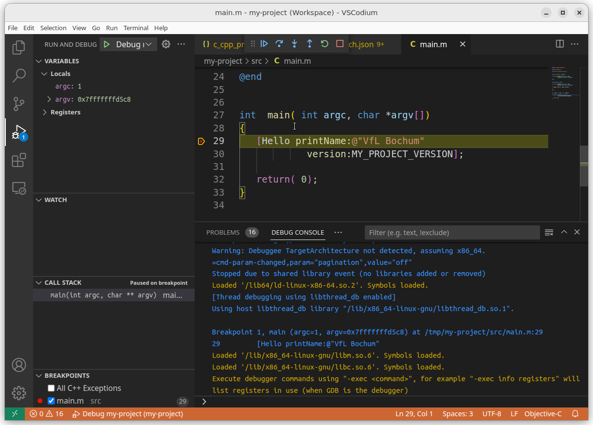
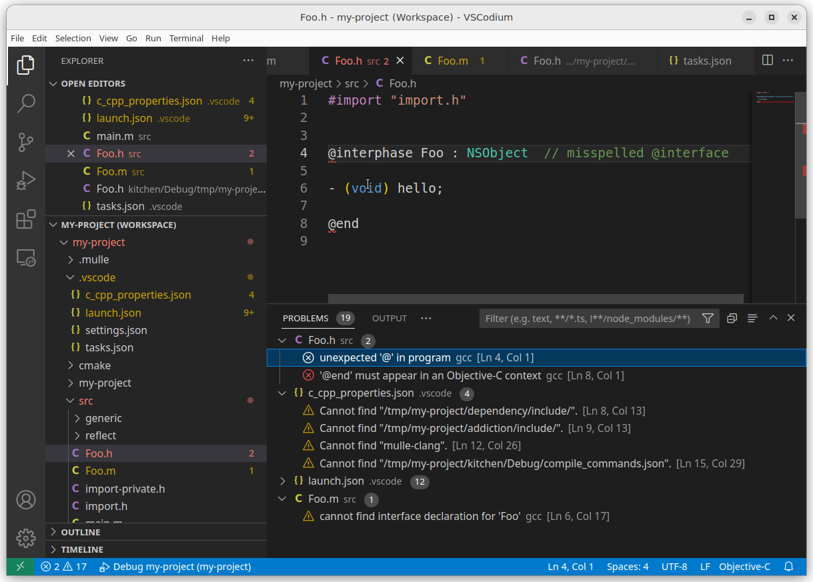

Visual Studio Code
Visual Studio Code and it’s FOSS sibling VSCodium are primarily Web IDEs that can also be used to develop C projects.
To get VSCode cooking though, you need to pep it up with extensions. Here is a list of some extensions, that are useful for mulle-objc development:
| Package | Comment |
|---|---|
| C/C++ (ms-vscode) | Not easily available on VSCodium |
| CMake (twxs) | |
| Markdown Preview Github Styling (bierner) | |
| Native Debug (webfreak) |
Click on the “Extension” icon on the left and search for extensions:

Create a mulle-objc project
If you haven’t installed mulle-sde go back to the Intro and follow the instructions there.
You need a terminal to create a mulle-objc project. Maybe the easiest way is to clone an existing mulle-objc project and modify it like so:
git clone https://github.com/mulle-cc/mulle-objc-vscode.git my-project
cd my-project
mulle-sde upgrade
mulle-sde project rename my-project
mulle-sde-developer provides the vscode-clang extension. This extension ensures, that VSCode ignores files that are non-editable. The extension also provides a couple of build targets for interfacing with mulle-sde and some debugger support for the “Native Debug” extension.
When you create a new project from scratch, add the vscode.clang extension:
mulle-sde init -d my-project -m foundation/objc-developer executable
cd my-project
mulle-sde extension add vscode-clang
Without the vscode extension, there won’t be any
.vscode file initially in your project.
Open the project
From the console, if you have the vscode command in your PATH, you can
type vscode my-project and the project should open.
Otherwise open the project from within VSCode with “File /Open Folder…“.
And there should be your project:

But… there may be errors. There are various paths in the .vscode
folder that may need fixing. Edit the file .vscode/c_cpp_properties.json:
{
"version": 4,
"configurations": [
{
"name": "Linux",
"includePath": [
"${workspaceFolder}/src/**",
"${workspaceFolder}/dependency/include/**",
"${workspaceFolder}/addiction/include/**"
],
"defines": [],
"compilerPath": "mulle-clang",
"cStandard": "c11",
"intelliSenseMode": "clang-x64",
"compileCommands": "${workspaceFolder}/kitchen/Debug/compile_commands.json"
},
{
"name": "Mac",
"includePath": [
"${workspaceFolder}/src/**",
"${workspaceFolder}/dependency/include/**",
"${workspaceFolder}/addiction/include/**"
],
"defines": [],
"compilerPath": "mulle-clang",
"cStandard": "c11",
"intelliSenseMode": "clang-x64",
"compileCommands": "${workspaceFolder}/kitchen/Debug/compile_commands.json"
},
{
"name": "Win32",
"includePath": [
"${workspaceFolder}/src/**",
"${workspaceFolder}/dependency/include/**",
"${workspaceFolder}/addiction/include/**"
],
"defines": [],
"compilerPath": "mulle-clang-cl.exe",
"cStandard": "c11",
"intelliSenseMode": "clang-x64",
"compileCommands": "${workspaceFolder}/kitchen/Debug/compile_commands.json"
}
]
}
For your platform, adjust to the proper compiler path. Type which mulle-clang
and it should give you the proper path. (Otherwise look in
/opt/mulle-clang-project/<version>/bin or /usr/local/bin).
Run Tasks
To see the list of available tasks choose “Terminal / Run Task…” and the list of commands will look something like this:

| Task | Description |
|---|---|
| Reflect | When you add or remove files from the project, you need to run “Reflect” so changes will be picked up. You do not need to edit CMakeLists.txt |
| Debug | The default build-style for crafting is Debug |
| Release | Use Release build-style for crafting |
| Clean | Clean your projects build products and intermediate files |
| Clean Tidy | Also clean downloaded dependencies. They will need to be refetched. |
| Clean Download Caches | Also clean mirrored git repositories and cached tar archives. |
| Upgrade | After installing a new mulle-sde version, upgrade the project. Cleans caches… |
Development Cycle
Craft
You need the package C/C++ for this.
Build your project using the “Craft Debug” task (“Terminal / Run Build Task…“). This can take a minute or more, depending on your machines capabilities. On the initial craft, dependencies will be fetched and built.

In the end you will see the line:
Run your executable:
kitchen/Debug/my-project
The executable location may differ with your local setup. So you might see a different path there. You can now run the executable directly in VSCode. Use Terminal / New Termial to open a terminal:

Debug
Navigate to your sources src/main.m and place a breakpoint in the
main by clicking to the left of the linenumber:

You may have to edit the .vscode/launch.json file at this point,
to set the correct executable path for the debugger.
Webfreak or C/C++ (ms-vscode) ?
There are two extensions to enable debugging in Visual Studio Code. One is
webfreak.debug(Native Debug by Webfreak) the other isms-vscode.cpptool(C/C++ from Microsoft). In terms of this guide, the main differentiator in thelaunch.jsonbetween both extensions is thetype. It’s"cppdbg"for Microsoft and “gdb” for Webfreak.
ms-vscode.cpptool
Edit the miDebuggerPath path to the mulle-gdb path (which mulle-gdb) on
your platform:
{
"version": "0.2.0",
"configurations": [
{
"_comment": "All? It's often convenient in library projects too",
"name": "Debug my-project",
"type": "cppdbg",
"request": "launch",
"stopAtEntry": true,
"program": "${workspaceFolder}/kitchen/Debug/my-project",
"args": [],
"environment": [],
"cwd": "${workspaceFolder}",
"additionalSOLibSearchPath": "${workspaceFolder}/dependency/Debug/lib:${workspaceFolder}/dependency/lib",
"windows": {
"MIMode": "gdb",
"miDebuggerPath": "C:\\mingw64\\bin\\mulle-gdb.exe",
"program": "${workspaceFolder}/kitchen/Debug/my-project.exe"
},
"osx": {
"MIMode": "lldb",
"miDebuggerPath": "/usr/local/bin/lldb-mi"
},
"linux": {
"MIMode": "gdb",
"miDebuggerPath": "mulle-gdb"
},
"preLaunchTask": "Debug"
}
]
}
webfreak.debug
Edit the gdbpath path to the mulle-gdb path (which mulle-gdb) on
your platform:
{
"version": "0.2.0",
"configurations": [
{
"type": "gdb",
"request": "launch",
"gdbpath": "/usr/local/bin/mulle-gdb",
"name": "Debug my-project",
"target": "${workspaceRoot}/kitchen/Debug/my-project.exe",
"cwd": "${workspaceRoot}",
"valuesFormatting": "parseText"
}
]
}
Now hit [F5] to run your program in the debugger. It should immediately stop on the breakpoint:

From here on use either the Native Debug documentation or Debug C in Visual Studio Code for more help.
Edit
We create a new class in “VSCode” to demonstrate the
“Edit->Reflect->Craft(->Debug)” cycle that is the key development cycle of
mulle-sde projects.
First up create two new files in src namely src/Foo.h and src/Foo.m.
(Right click on the src folder and “New File”).
Let’s put an error into the file for demonstration purposes:
#import "import.h"
@interphase Foo : NSObject // misspelled @interface
- (void) hello;
@end
#import "Foo.h"
#import "import-private.h"
@implementation Foo
- (void) hello
{
mulle_printf( "Hello\n");
}
@end
Tip
If you like a class with template code, you can use
mulle-sde add src/Foo.minstead. This will also make the next “Reflect” step superflous.
Reflect
Now run the “Reflect” task (“Terminal / Run Task… / Reflect”).
The reflection places your source files into the cmake build system and adds
them to your list of C headers. You can observe the change in
cmake/reflect/_Sources and cmake/reflect/_Headers as well as in
src/reflect/_my-project.export.h
You only need to “Reflect” if you have added or deleted files from the project.
Craft
Now with the syntax error in place, the next craft will immediately preempt with an error:

If Visual Studio can’t find the source file, you may have to tweak the
“problemmatcher” in .vscode/tasks.json:
{
"version": "2.0.0",
"tasks": [
{
"label": "Craft",
"type": "shell",
"command": "mulle-sde",
"args": [
"craft"
],
"problemMatcher": {
"base": "$gcc",
"fileLocation": [
"relative",
"${workspaceFolder}/kitchen/Debug"
]
},
...
change the "relative" in “tasks/problemMatcher/fileLocation” to
"absolute". Do this for the tasks “Craft”, “Debug”, “Release”.
That wraps it up for VSCode here.